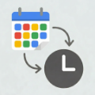

A Chrome extension to autofill When2Meet from your Google Calendar
When2Meet Google Calendar Autofill is a browser extension that reads your Google Calendar events to determine when you are busy, then automatically fills in your available time slots on When2Meet.com scheduling grids. It saves you the tedious work of manually cross-referencing your calendar and clicking each slot. All calendar data is processed locally in your browser and is never sent to any external server.